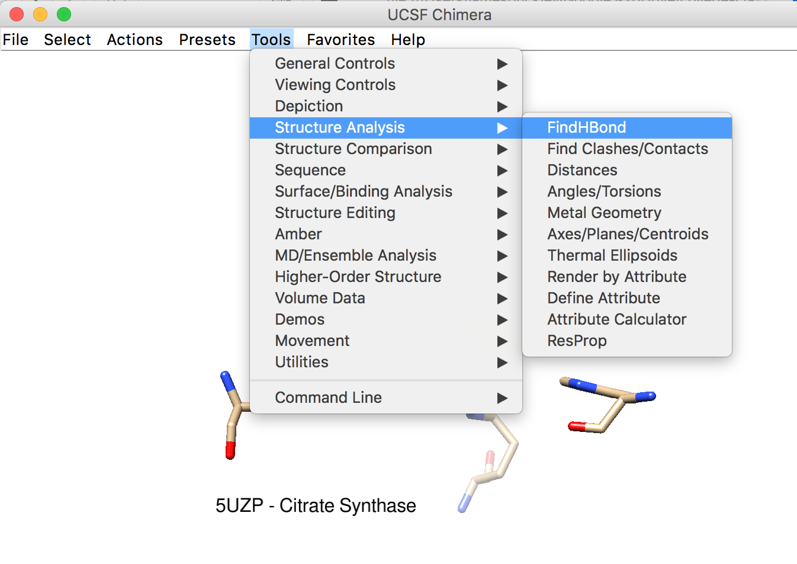

Use the command line in Chimera to examine the protein active site
a) 5UZP
This image was generated using the preset interactive 3 from the drop down menu.
This image was generated by focusing on the ligand and using the rlabel command
for amino acids identified from previous steps.
This image was genetated from the previous image. The findhbond command
was used to identify potential hydrogen bonds.

b) 4WLO
This image was generated using the rainbow chain command.
This image was generated using the surf command to show the surface
and the surftransparency command to make the ribbon visivle behind the surface.

This image was generated using the rlabel command to identify important amino acids.
This image was generated using the findhbond tool similar to as with 5UZP.